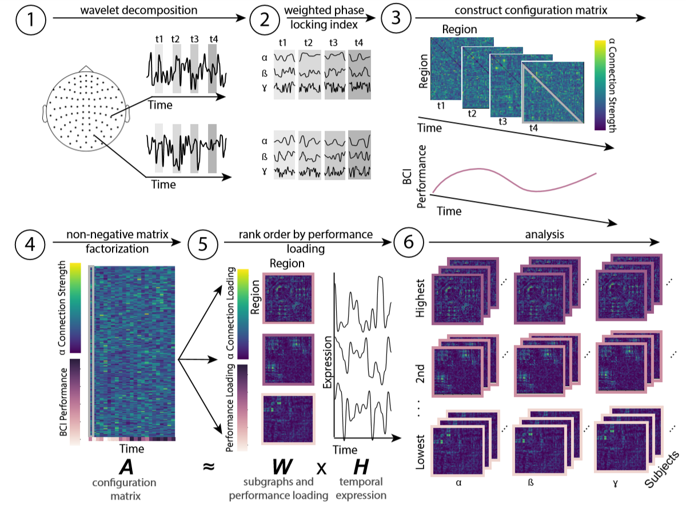
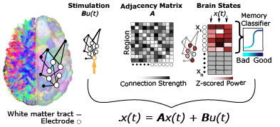

PDFs are provided to ensure timely dissemination of academic work. They can be downloaded for noncommercial, information purposes only, and may not be reposted without permission from the respective copyright holders.